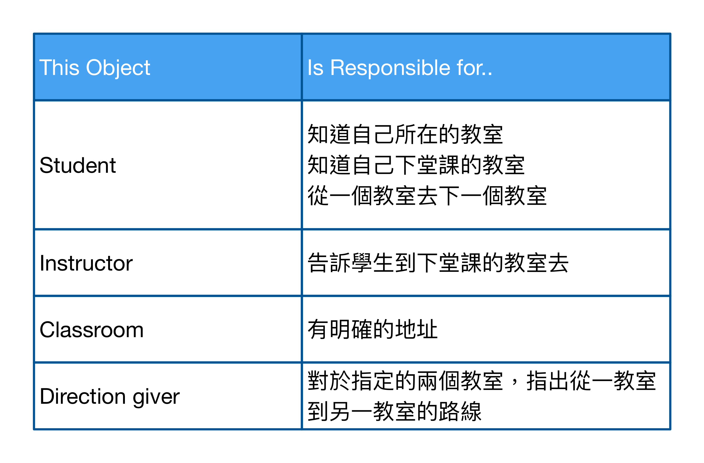

Object-Oriented Paradigm
Purpose: Explain why object-oriented paradigm over functional decomposition.
Naive Problem
If I were to give you the task of writing code to access a description of shapes that were stored in a database and then display them.
如果給你一個任務，要編寫一段程式，存取在資料庫中儲存的形狀描述，然後將它顯示出來。
Structural Programming thinking - possible steps
- Locate the list of shapes in the database. (在資料庫中找到形狀清單)。
- Open up the list of shapes. (打開形狀清單)。
- Sort the list according to some rules. (依照某種規則將清單排序)。
- Display the individual shapes on the monitor. (在螢幕上顯示各種形狀)。
Functional Decomposition (功能分解)
4a. Identify the type of shape. (識別形狀的類型)。 4b. Get the location of the shape. (獲取形狀的位置)。
4c. Call the appropriate function that will display the shape, giving it the shape’s location. (以形狀的位置為參數，呼叫顯示形狀的 Function)。
Functional Decomposition 的挑戰
- 它通常會導致一個**主**程式負責控制子程式(subprograms)。 這使得主程式所承受的責任太多了：要協調各 subprograms，還要控制他們的順序 (Why not delegation?)。 «上帝物件：能者多勞»
- 如果將實作各步驟的所有邏輯都放在一個大 Function 或大 module 的話，則這些步驟的實質性變化，都必須對這個 Function 或 module 進行修改。 «因應變化的能力差»
討論
- 需求總是在改變 (不變的真理)。
- 我們可能不知道會發生什麼變化，但我們能夠猜到哪裡會變化。(OO 最大的優點之一，就是可以封裝這些變化區域)。
- 與其抱怨需要總是改變，不如改變開發流程，有效的因應變化。
Dealing with Changes: Functional Decomposition
4c. Call the appropriate function that will display the shape, giving it the shape’s location. (以形狀的位置為參數，呼叫顯示形狀的 Function)。
Using Modularity to Contain Variation
function: display shape
input: type of shape, description of shape
action:
switch (type of shape)
case square: put display function for square here
case circle: put display function for circle here
討論
- 如果要顯示一個新的形狀(例如三角形)，我可能只需要改這個模組(希望是)。
- 這個模組的輸入是 type of shape, description of shape，如果今天使用不同方式提供輸入(例如 array of points 或其他方式)，該怎麼辦？
Functional Decomposition 兩個可能的問題
- Weak cohesion (Cohesion refers to how “closely the operations in a routine are related; cohesion as clarity because the more that operations are related in a routine (or a class), the easier it is to understand things.)
- Tight Coupling (Coupling refers to “the strength of a connection between two routines. Coupling is a complement to cohesion.)
The goal is to create routines with internal integrity (strong cohesion) and small, direct, visible, and flexible relations to other routines (loose coupling).
從日常生活借鏡
You are an instructor at a conference. People in your class have another class to attend following yours, but don’t know where it is located. One of your responsibilities is to make sure everyone knows how to get to the next class.
你的責任是確保大家知道怎麼去到下一堂課的位置。
可能的步驟
- Get list of people in the class.
- For each person on this list, do the following:
- Find the next class he or she is taking.
- Find the location of that class.
- Find the way to get from your classroom to the person’s next class.
- Tell the person how to get to his or her next class.
所以你可能需要這麼做
- A way of getting the list of people in the class.
- A way of getting the schedule for each person in the class.
- A program that gives someone directions from your classrom to any other classroom.
- A control program that works for each person in the class and does the reuqired steps for each person.
不! 你應該會這樣做
你可能會把從這個教室到其他教室的路線貼出來，然後告訴所有人：我們已經將下一堂課的地點和其他教室的位置都貼在後面了，請根據它找到你們下一堂課的教室。
You would probably post directions to go from this classroom to the other classrooms and then tell everyone in the class, I have posted the locations of the classes following this in the back of the room, as well as the locations of the other classrooms. Please use them to go to your next classroom.
兩種策略的差別
- Giving explicit directions to everyone.
- Giving general instructions and then expect the each person will figure out how to do the task individually. (責任轉移 delegation)
需求又改變了
如果我被告知，需要給擔任助教工作的學生一些特殊指示。他們可能需要在下一堂課前收集本堂課學生的評價，並且交到辦公室。
- 第一種方式，不得不改控制程式，區別研究生跟大學生，然後給研究生特別的指示。
- 第二種方式，只需要為研究生再編寫一個程式，但控制程式仍然只需要說: 找到你們的下一堂教室。
為什麼有這麼大的差異
- 人們對自己的行為負責，而不再由一個中央控制程式負責決定。
- 控制程式可以與不同類型的學生交流(大學生或研究生)。
- 控制程式不需要知道學生從這個教室到下一個教室可能需要採取的任何特殊步驟。
軟體開發的三種視角
- Conceptual: 表示 domain concepts，不管如何實作。回答這個問題：What am I responsibile for?
- Specification: 關注軟體的 interface，但還是不管如何實作。回答這個問題：How am I used?
- Implementation: 我們都很熟。回答這個問題： How do I fulfill my responsibilities?"
不同視角的用途
概念層次上的溝通：你告訴學生的是「你要他們怎麼做」，而不是「如何去做」。 (you are telling people what you want, not how to do it.)
在概念層次上交流，而在另一層次(實作)上執行，這樣講師就不需要知道具體的實作細節。只需要一般性，概念性的知道即可。
效力：只要概念不變，請求者與實作細節的變化就被隔離開來。
Object-Oriented Paradigm
使用物件的優點在於，可以定義物件負責自己的事務。

討論
The objects were identified by looking at the entities in the problem domain. I identified the responsibilities (or methods) for each object by looking at what these entities need to do.
– ☆☆☆ 理解物件的最佳方式 ☆☆☆ 將其看為具有責任的東西。物件應該自己負責自己，而且應該清楚地定義責任。
Apply Fowler’s Perspectives
- At the conceptual level, an object is a set of responsibilities. (一組責任)
- At the specification level, an object is a set of methods (behaviors) that can be invoked by other objects or by itself. (一組行為)
- At the implementation level, an object is code and data and computational interactions between them.
Object-Oriented Approach
- Start the control program.
- Instantiate the collection of students in the classroom.
- Tell the collection to have the students go to their next class.
- The collection tells each student to go to his or her next class.
- Each student:
- Finds where his next class is.
- Determines how to get there.
- Goes there.
- Done.
Abstract and Polymorphism
- Student abstract class, GraduageStudent and RegularStudent classes.
- Abstract classes define what other, related, classes can do. Abstract classes act as placeholders for other classes.
- Collection 只需要處理 Student 這個 Concept (Abstract)，每一種 Student 都可以按照自己的方式實作功能 (Concrete)。
- 當我們透過抽象參考，概念性的要求物件做什麼時，將得到不同的行為，具體行為取決於 Derived Class 的實作。(Polymorphism)
回到一開始的問題
- Locate the list of shapes in the database. (在資料庫中找到形狀清單)。
- Open up the list of shapes. (打開形狀清單)。
- Sort the list according to some rules. (依照某種規則將清單排序)。
- Display the individual shapes on the monitor. (在螢幕上顯示各種形狀)。
Object-Oriented Approach (1/2)
Object-Oriented Approach (2/2)
- 主程式建立一個 ShapeDataBase 物件。
- 主程式要求 database object 找到我感興趣的一組形狀，並且 instantiate 一個保存這些形狀的 collection 物件.
- 主程式要求 Collection 物件排序所存放的形狀。
- 主程式要求 Collection 物件顯示形狀。
- Collection 物件要求所存放的每個形狀顯示自己。
- 每個形狀根據形狀種類顯示自己。
需求又改變了
-
增加新的形狀 (三角形)
- 增加一個新的三角形 Concrete Class
- 在此 Derived Class 實作自己的顯示方法。
-
更改排序方式
- 修改 Collection 的 Sorting algorithm
結果：The object-oriented approach has limited the impact of changing requirements.
封裝的優點
- 使用更容易，因為使用者不再需要擔心實作問題
- 可以在不考慮呼叫者的情況下修改實作 (因為它一開始就不知道物件怎麼實作的 depend on interface, not implementation)
- The internals of an object are unknown to other objects. (封裝使物件內部行為的變化對其他物件變得透明了 <不可見>)。
Take away
- 將物件看為具有責任的東西。物件應該自己負責自己，而且應該清楚地定義責任。
- 物件真正的威力不在於繼承，而是來自於封裝行為(採取更廣義的封裝定義)。
- OO 最大的優點之一，就是可以封裝這些變化區域。
- 抽象與責任轉嫁的好處 (placeholder and delegation)。
- 三種視角的應用 (在抽象層次上溝通，在實作層次上執行)。